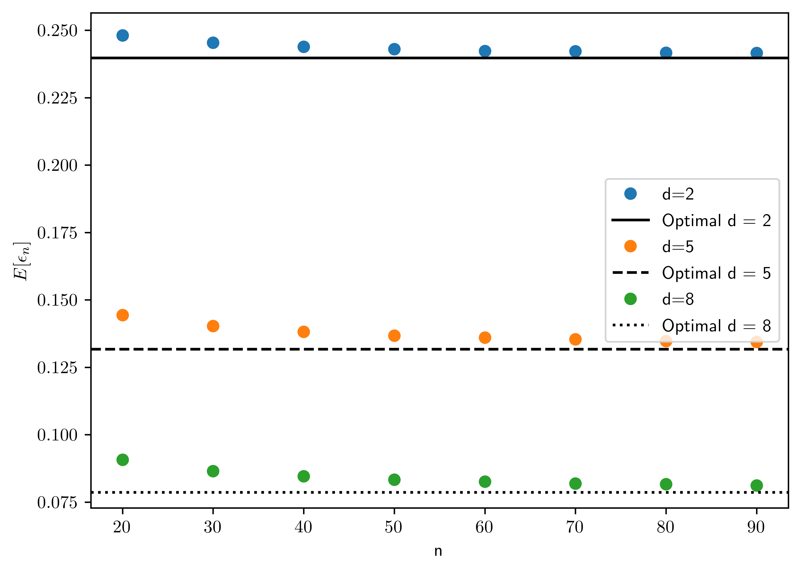
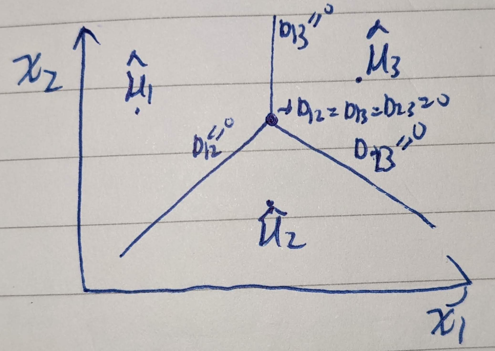
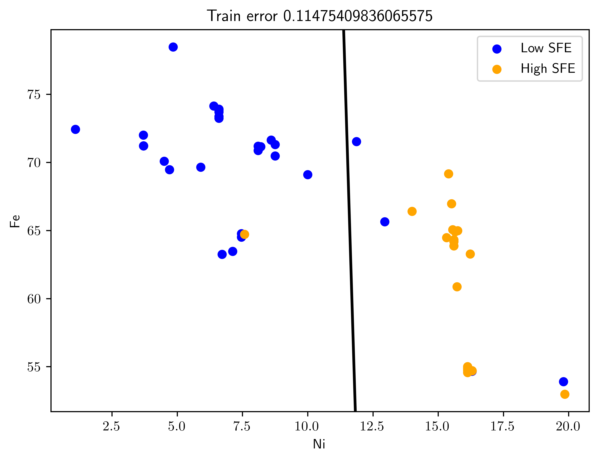
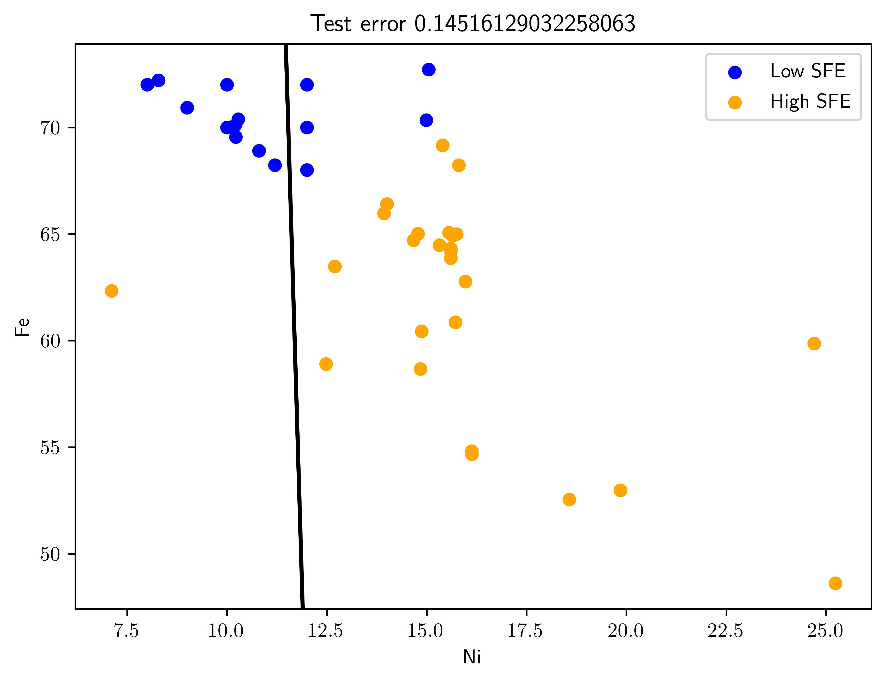

%matplotlib inline
import sys # system information
import matplotlib # plotting
import scipy.stats as st # scientific computing
import pandas as pd # data managing
import numpy as np # numerical comuptation
import numba
import sklearn as sk
from numpy import linalg as LA
import scipy as sp
import scipy.optimize as opt
import sympy as sp
import matplotlib.pyplot as plt
from numpy.linalg import inv, det
from numpy.random import multivariate_normal as mvn
from numpy.random import binomial as binom
from sklearn.discriminant_analysis import LinearDiscriminantAnalysis as LDA #problem 4.8
from sklearn.model_selection import train_test_split
# Matplotlib setting
plt.rcParams['text.usetex'] = True
matplotlib.rcParams['figure.dpi']= 300
np.random.seed(20221011)7 Homework 2
7.1 Homework Description
- Course: ECEN649, Fall2022
Problems from the book:
3.6 (10 pt)
4.2 (10 pt)
4.3 (10 pt)
4.4 (10 pt)
4.8 (20 pt)
- Deadline:
Oct. 12th, 11:59 am
7.2 Computational Enviromnent Setup
7.2.1 Third-party libraries
7.2.2 Version
print(sys.version)
print(matplotlib.__version__)
print(sp.__version__)
print(np.__version__)
print(pd.__version__)
print(sk.__version__)3.8.14 (default, Sep 6 2022, 23:26:50)
[Clang 13.1.6 (clang-1316.0.21.2.5)]
3.3.1
1.6.2
1.19.1
1.1.1
1.1.27.3 Problem 3.6 (Python Assignment)
Using the synthetic data model in Section A8.1 for the homoskedastic case with \(\mu_0 = (0,\dots,0)\), \(\mu_1=(1,\dots,1)\), \(P(Y=0)=P(Y=1)\), and \(k=d\) (independent features), generate a large number (e.g., \(M=1000\)) of training data sets for each sample size \(n=20\) to \(n=100\), in steps of \(10\), with \(d=2,5,8\), and \(\sigma=1\). Obtain an approximation of the expected classification error \(E[\epsilon_n]\) of the nearest centroid classifier in each case by averaging \(\epsilon_n\), computed using the exact formula (3.13), over the \(M\) synthetic training data sets. Plot \(E[\epsilon_n]\) as a function of the sample size, for \(d=2,5,8\) (join the individual points with lines to obtain a smooth curve). Explain what you see.
- The formula in Braga-Neto (2020, 56, Eq. 3.13)
- \(\epsilon_n = \frac{1}{2}\left(\Phi\left(\frac{a_{n}^{T}\hat{\mu}_0 + b_n}{\|a_n\|}\right) + \Phi\left(-\frac{a_{n}^{T}\hat{\mu}_1 + b_n}{\|a_n\|}\right) \right)\)
- \(\mu_0 = (0,\dots, 0)\); \(\hat{\mu}_0 = \frac{1}{N_0}\sum^{n}_{i=1}X_i I_{Y_i=0}\)
- \(\mu_1 = (1,\dots,1)\); \(\hat{\mu}_1 = \frac{1}{N_1}\sum^{n}_{i=1}X_i I_{Y_i=1}\)
- \(a_n = \hat{\mu}_1 - \hat{\mu}_0\)
- \(b_n = -\frac{(\hat{\mu}_1 - \hat{\mu}_0)^{T}(\hat{\mu}_1 + \hat{\mu}_0)}{2}\)1
- As shown in Figure 7.1, the error rate converges to optimal error as the sample size increases.
def norml(v):
return LA.norm(v, 2)
def get_an(hm0,hm1):
return hm1 - hm0
def get_bn(hm0,hm1):
return -float((hm1 - hm0).T @ (hm1+hm0))/2
def epsilon(hmu0, hmu1, mu0, mu1,p0=0.5):
p1 = 1-p0
an = get_an(hmu0, hmu1)
bn = get_bn(hmu0, hmu1)
epsilon0 = st.norm.cdf( (float(an.T* mu0) + bn)/norml(an))
epsilon1 = st.norm.cdf(- (float(an.T*mu1)+ bn)/norml(an))
return p0*epsilon0 + p1*epsilon1
class GaussianDataGen:
def __init__(self, n, d, s=1, mu=0):
self.n = n
self.d = d
self.mu = np.matrix(np.ones(d) * mu).T
self.s = s
self.cov = self.get_cov()
def get_cov(self):
return np.identity(self.d) * self.s
def sample(self):
data = np.random.normal(self.mu[0][0], self.s, size= (self.d, self.n))
hmuV = np.mean(data, axis=1)
return np.matrix(hmuV).T
def cal_eps(dg0, dg1, p0=0.5):
hmuV0 = dg0.sample()
hmuV1 = dg1.sample()
mu0 = np.matrix(np.zeros(dg0.d)).T
mu1 = np.matrix(np.ones(dg1.d)).T
return epsilon(hmuV0, hmuV1, mu0, mu1,p0=0.5)
cal_eps_func = np.vectorize(cal_eps)
def exp_try_nd(n, d, s=1,M=1000):
gX0 = GaussianDataGen(n=n, d=d, s= s,mu=0)
gX1 = GaussianDataGen(n=n, d=d, s= s, mu=1)
#eps = cal_eps_func([gX0]*M, gX1)
eps = [cal_eps_func(gX0, gX1) for i in range(0,M)]
return np.mean(eps)
exp_try_nd_func = np.vectorize(exp_try_nd)
def bayes_ncc(mu0, mu1):
return st.norm.cdf(- norml(mu1-mu0)/2)
M = 1000
ns = np.arange(20,100, 10)
s = 1
dres = {2:[],5:[],8:[]}
for k in dres.keys():
dres[k]= exp_try_nd_func(ns,k)
# Optimal error
opts = [bayes_ncc(np.zeros(k), np.ones(k)) for k in dres.keys()]
fig, ax = plt.subplots()
sts = ["-", "--", ":"]
for (i, k) in enumerate(dres.keys()):
ax.plot(ns, dres[k], 'o',label="d={}".format(k))
ax.axhline(y= opts[i], label="Optimal d = {}".format(k), color='k', linestyle=sts[i])
ax.set_xlabel("n")
ax.set_ylabel("$E[\\epsilon_n]$")
ax.legend();
7.4 Problem 4.2
A common method to extend binary classification rules to \(K\) classes, \(K>2\), is the one-vs-one approach, in which \(\frac{K(K-1)}{2}\) classifiers are trained between all pairs of classes2, and a majority vote of assigned labels is taken.
7.4.1 (a)
Formulate a multiclass version of parametric plug-in classification using the one-vs-one approach.
Let \(\psi^{*}_{i,j}\) be a one-one classifiers that \(i\neq j\), and \(\{(i,j)| i\in [1,k], j \in [1,k], i\neq j\}\). For \(K\) classes, there are \(K(K-1)\) classifiers; for each classifier \(\psi^{*}_{i,j}\) and \(x\in R^d\),
\[\begin{equation} \psi^{*}_{ij,n} = \begin{cases} 1, & D_{ij, n}(x) > k_{ij,n}\\ 0, & \text{otherwise} \end{cases} \end{equation}\]
where
- \(D_{ij,n}(x) = \ln \frac{p(x|\theta_{i,n})}{p(x|\theta_{j,n})}\)
- \(k_{ij,n} = \ln\frac{P(Y=j)}{P(Y=i)}\)
- Noted that feature-label distribution is expressed via a familty of PDF \(\{p(x|\theta_i) | \theta \in \Theta \subseteq R^m\}\), for \(i=1,\dots,K\).
- \(\psi^{*}_{ij,n} = 1\otimes \psi^{*}_{ji,n}\). These two are similar classifiers with inverted outcome.
Let \(\psi^{*}_{i,n} = \sum_{j\neq i} \psi^{*}_{ij,n}\), and the one-vs-one classifier is
\[\psi^{*}_{n}(x) = \arg\max_{k=1,\dots,K} \psi^{*}_{k,n} \tag{7.1}\]
7.4.2 (b)
Show that if the threshold \(k_{ij,n}\) between classes \(i\) and \(j\) is given by \(\ln\frac{\hat{c}_j}{\hat{c}_i}\), then the one-vs-one parametric classification rule is equivalent to the simple decision. \[\psi_{n}(x) = \arg\max_{k=1,...,K} \hat{c}_{k} p(x|\theta_{k,n}), x\in R^d\] (For simplicity, you may ignore the possibility of ties.)
\[\begin{align} \ln \frac{ p(x|\theta_{i,n})}{p(x|\theta_{j,n})} &> k_{ij,n} = \ln\frac{\hat{c_j}}{\hat{c_i}}\\ \ln p(x|\theta_{i,n}) - \ln p(x|\theta_{j,n}) &> \ln \hat{c}_j - \ln \hat{c}_{i}\\ \hat{c}_i p(x|\theta_{i,n}) &> \hat{c}_j p(x|\theta_{j,n}) \end{align}\]
\[\begin{align} \psi^{*}_{ij, n}% &= \begin{cases} 1, & \hat{c}_i p(x|\theta_{i,n}) > \hat{c}_j p(x|\theta_{j,n})\\ 0, & otherwise \end{cases}\\ &= I_{\hat{c}_i p(x|\theta_{i,n}) > \hat{c}_j p(x|\theta_{j,n})} \end{align}\]
Then,
\[\begin{align} \psi^{*}_{i,n}% &=\sum_{j\neq i} \psi^{*}_{ij,n}\\ &= \sum_{j\neq i} I_{\hat{c}_i p(x|\theta_{i,n}) > \hat{c}_j p(x|\theta_{j,n})} \end{align}\]
\[\begin{align} \psi^{*}_{n}(x)% &= \arg\max_{k=1,\dots,K}\psi^{*}_{k,n}\\ &= \arg\max_{k=1,\dots,K}\sum_{j\neq i}\psi^{*}_{kj,n}\\ &= \arg\max_{k=1,\dots,K} \sum_{j\neq i} I_{\hat{c}_k p(x|\theta_{k,n}) > \hat{c}_j p(x|\theta_{j,n})}\\ \end{align}\]
Let \(\psi^{*}_{n}(x) =\kappa\), that means \(\psi^{*}_{\kappa,n}\) is the maximum among \(\{\psi^{*}_{j,n}|j= (1,\dots, K)\}\). Assume there is an \(s\neq \kappa\) s.t. \(\hat{c}_s p(x|\theta_{s,n}) > \hat{c}_\kappa p(x|\theta_{\kappa,n}) >\) the rests. Thus, \(I_{\hat{c}_s p(x|\theta_{s,n}) > \hat{c}_\kappa p(x|\theta_{\kappa,n})} = 1\)
\[\psi^{*}_{s,n} = \sum_{j\neq s} I_{\hat{c}_s p(x|\theta_{s,n}) > \hat{c}_j p(x|\theta_{j,n})} = \underbrace{\sum_{j\neq s; j\neq \kappa} I_{\hat{c}_s p(x|\theta_{s,n}) > \hat{c}_j p(x|\theta_{j,n})}}_{=a}+\underbrace{I_{\hat{c}_s p(x|\theta_{s,n}) > \hat{c}_\kappa p(x|\theta_{\kappa,n})}}_{=1}\]
\[\psi^{*}_{\kappa,n} = \sum_{j\neq \kappa} I_{\hat{c}_\kappa p(x|\theta_{\kappa,n}) > \hat{c}_j p(x|\theta_{j,n})} = \underbrace{\sum_{j\neq \kappa; j\neq s}I_{\hat{c}_\kappa p(x|\theta_{\kappa,n}) > \hat{c}_j p(x|\theta_{j,n})}}_{=a} + \underbrace{I_{\hat{c}_\kappa p(x|\theta_{\kappa,n}) > \hat{c}_s p(x|\theta_{s,n})}}_{=0}\]
where \(a\) is a nonnegative number. That means
\[\psi^{*}_{\kappa,n} < \psi^{*}_{s,n} \tag{7.2}\]
\(\psi^{*}_{\kappa,n}\) is not the maximum. Equation 7.2 is contradict to the statement that \(\psi^{*}_{n}(x)=\kappa\). In conclusion, \(\hat{c}_k p(x|\theta_{\kappa}, n)\) is the maximum if \(\psi_n(x) = k\).
7.4.3 (c)
Applying the approach in items (a) and (b), formulate a multiclass version of Gaussian discriminant analysis. In the case of multiclass NMC, with all thresholds equal to zero, how does the decision boundary look like?
For Gaussian discriminant analyis, the discriminant is defined as
\[\hat{D}^{*}_{ij}(x) = \frac{1}{2}(x-\hat{\mu}_i)^{T}\hat{\Sigma}^{-1}_{i}(x-\hat{\mu}_i)-\frac{1}{2}(x-\hat{\mu}_j)^{T}\hat{\Sigma}^{-1}_{j}(x-\hat{\mu}_j) + \frac{1}{2}\ln\frac{\det(\hat{\Sigma}_i)}{\det(\hat{\Sigma}_j)}\]
\[\begin{equation} \psi^{*}_{ij, n}(x) = I_{\hat{D}^{*}_{ij}(x) > 0} \end{equation}\]
\[\psi^{*}_{n} = \arg\max_{k=1,\dots,K} \hat{c}_k p(x|\hat{\mu}_{k,n}, \hat{\Sigma}_{k,n}) = \arg\max_{k=1,\dots,K} Normal(x; \hat{\mu}_{k,n}, \hat{\Sigma}_{k,n})\]
For NMC case, suppose there are 3 classes with \(d=2\).
- \(K=3\)
- Number of classifiers: \(\frac{3\cdot 2}{2}=3\)
- \(\psi^{*}_{1,2}, \psi^{*}_{1,3}, \psi^{*}_{2,3}\)
\[\begin{equation} boundary = \begin{cases} \hat{\Sigma}^{-1}(\hat{\mu}_1 - \hat{\mu}_2)\begin{bmatrix} x_1\\ x_2 \end{bmatrix} +(\hat{\mu}_2 - \hat{\mu}_1)^T \hat{\Sigma}^{-1}\left(\frac{\hat{\mu}_1+\hat{\mu}_2}{2}\right) = 0\\ \hat{\Sigma}^{-1}(\hat{\mu}_1 - \hat{\mu}_3)\begin{bmatrix} x_1\\ x_2 \end{bmatrix} +(\hat{\mu}_3 - \hat{\mu}_1)^T \hat{\Sigma}^{-1}\left(\frac{\hat{\mu}_1+\hat{\mu}_3}{2}\right) = 0\\ \hat{\Sigma}^{-1}(\hat{\mu}_2 - \hat{\mu}_3)\begin{bmatrix} x_1\\ x_2 \end{bmatrix} +(\hat{\mu}_3 - \hat{\mu}_2)^T \hat{\Sigma}^{-1}\left(\frac{\hat{\mu}_2+\hat{\mu}_3}{2}\right) = 0\\ \end{cases} \end{equation}\]

7.5 Problem 4.3
Under the general Gaussian model \(p(x|Y=0)\sim \mathcal{N}_d(\mu_0, \sum_0)\) and \(p(x|Y=1)\sim \mathcal{N}_d(\mu_1, \sum_1)\), the classification error \(\epsilon_n = P(\psi_n(X)\neq Y| S_n)\) of any linear classifier in the form
\[\begin{equation} \psi_{n}(x) = \begin{cases} 1,& a_{n}^{T}x + b_n > 0,\\ 0,& \text{otherwise} \end{cases} \end{equation}\]
(examples discussed so far include LDA and its variants, and the logistic classifier) can be readily computed in terms of \(\Phi\) (the CDF of a standard normal random variable), the classifier parameters \(a_n\) and \(b_n\), and the distributional parameters \(c=P(Y=1)\), \(\mu_0\), \(\mu_1\), \(\Sigma_0\), and \(\Sigma_1\).
7.5.1 (a)
Show that
\[\epsilon_n = (1-c)\Phi\left( \frac{a_{n}^{T}\mu_0 + b_n}{\sqrt{a_{n}^{T}\Sigma_0 a_n}} \right) + c \Phi\left( -\frac{a^{T}_{n}\mu_1 + b_n}{\sqrt{a_{n}^{T}\Sigma_1 a_n}}\right)\]
Hint: the discriminant \(a^{T}_{n}x+b_n\) has a simple Gaussian distribution in each class.
From Braga-Neto (2020, Eq. 2.34),
\[\epsilon^{*} = \underbrace{P(Y=0)}_{=1-c}\epsilon^{0}[\psi^*] + \underbrace{P(Y=1)}_{=c}\epsilon^{1}[\psi^*]\]
\[\begin{align} \epsilon^{0}[\psi^{*}]% &= P(a_{n}^{T}x+b_n > 0 | Y=0)\\ \end{align}\]
Use the affine property of Gaussian distribution described in Braga-Neto (2020) [pp. 307. G4]3.
- \(a^{T}_{n}x+b_n | Y=0 \sim N(a^{T}_{n}\mu_0+b_n, \underbrace{a^{T}_{n}\Sigma_{0}a_{n}}_{\sigma^2})\)
\[\begin{align} \epsilon^{0}[\psi^{*}]% &= 1 - P(a^{T}_{n}x+b_n \leq 0 | Y=0)\\ &= 1 - \Phi\left(\frac{0 - (a^{T}_{n}\mu_0 + b_n)}{\sqrt{a^{T}_{n}\Sigma_{0}a_{n}}}\right)\\ &= 1 - \Phi\left(-\frac{a^{T}_{n}\mu_0 + b_n}{\sqrt{a^{T}_{n}\Sigma_{0}a_{n}}}\right)\\ &= \Phi\left(\frac{a^{T}_{n}\mu_0 + b_n}{\sqrt{a^{T}_{n}\Sigma_{0}a_{n}}}\right) \end{align}\]
Similarly,
\[\begin{align} \epsilon^{1}(\psi^{*})% &= P(a_{n}^{T}x+b_n < 0 | Y=1)\\ &= \Phi\left(\frac{0 - (a^{T}_{n}\mu_1 + b_n)}{\sqrt{a^{T}_{n}\Sigma_1 a_n}}\right)\\ &= \Phi\left(-\frac{a^{T}_{n}\mu_1 + b_n}{\sqrt{a^{T}_{n}\Sigma_1 a_n}}\right) \end{align}\]
Combining together,
\[\begin{align} \epsilon^{*}% &= \underbrace{P(Y=0)}_{=1-c}\epsilon^{0}[\psi^*] + \underbrace{P(Y=1)}_{=c}\epsilon^{1}[\psi^*]\\ &= (1-c)\epsilon^{0}[\psi^*] + c\epsilon^{1}[\psi^*]\\ &= (1-c)\Phi\left(\frac{a^{T}_{n}\mu_0 + b_n}{\sqrt{a^{T}_{n}\Sigma_{0}a_{n}}}\right) + c\Phi\left(-\frac{a^{T}_{n}\mu_1 + b_n}{\sqrt{a^{T}_{n}\Sigma_1 a_n}}\right) \end{align}\]
7.5.2 (b)
Compute the errors of the NMC, LDA, and DLDA classifiers in Example 4.2 if \(c=1/2\), \[\begin{equation*} \mu_0 = \begin{bmatrix} 2\\ 3 \end{bmatrix}, \mu_1 = \begin{bmatrix} 6\\ 5 \end{bmatrix}, \Sigma_0 = \begin{bmatrix} 1 & 1\\ 1 & 2 \end{bmatrix}, \text{ and } \Sigma_1 = \begin{bmatrix} 4 & 0\\ 0 & 1 \end{bmatrix} \end{equation*}\] Which classifier does the best?
As shown in Table 7.1, NMC has the lowest Bayes error.
def epsilon_general(an, bn, c, mu0, mu1, sig0, sig1):
e0 = st.norm.cdf(\
float(an.T @ mu0 + bn)/\
np.sqrt(float(an.T @ sig0 @ an)))
e1 = st.norm.cdf(\
-float(an.T @ mu1 + bn)/\
np.sqrt(float(an.T @ sig1 @an)) )
return (1-c)*e0 + c*e1
truth = {
"c": 0.5,
"mu0": np.matrix([[2],[3]]),
"mu1": np.matrix([[6],[5]]),
"sig0": np.matrix([[1,1],[1,2]]),
"sig1": np.matrix([[4,0],[0,1]]),
}
meth = {
"NMC":{
"an": np.matrix([[4],[2]]),
"bn": -24
},
"LDA":{
"an": 3/7*np.matrix([[5], [3]]),
"bn": -96/7
},
"DLDA":{
"an": 2/5*np.matrix([[6],[5]]),
"bn": -88/5
}
}
berrors = np.zeros(len(meth.keys()))
for (i,k) in enumerate(meth.keys()):
berrors[i] = epsilon_general(**meth[k], **truth)
pd.DataFrame({"Method": list(meth.keys()),\
"Bayes Error": berrors}).sort_values(\
["Bayes Error"], ascending=[1])| Method | Bayes Error | |
|---|---|---|
| 0 | NMC | 0.084775 |
| 1 | LDA | 0.085298 |
| 2 | DLDA | 0.087606 |
7.6 Problem 4.4
Even in the Gaussian case, the classification error of quadratic classifiers in general require numerical integration for its computation. In some special simple cases, however, it is possible to obtain exact solutions. Assume a two-dimensional Gaussian problem with \(P(Y=1)=\frac{1}{2}\), \(\mu_0=\mu_1 = 0\), \(\Sigma_0=\sigma_{0}^{2}I_2\), and \(\Sigma_1 = \sigma^{2}_{1}I_2\). For definiteness, assume that \(\sigma_0 < \sigma_1\).
7.6.1 (a)
Show that the Bayes classifier is given by \[\begin{equation} \psi^{*}(x) = \begin{cases} 1, &\|x\| > r^{*},\\ 0, &\text{ otherwise }, \end{cases} \quad \text{ where } r^{*} = \sqrt{2\left(\frac{1}{\sigma_{0}^{2}} - \frac{1}{\sigma_{1}^{2}}\right)^{-1}\ln\frac{\sigma^{2}_{1}}{\sigma^{2}_{0}}} \end{equation}\] In particular, the optimal decision boundary is a circle of radius \(r^{*}\).
The inverted \(\Sigma_1\) and \(\Sigma_2\) are4
\[\begin{align} \Sigma_0 &= \sigma_{0}^2 I_2 = \begin{bmatrix} \sigma_{0}^2 & 0 \\ 0 & \sigma_{0}^2 \end{bmatrix}\\ \Sigma_{0}^{-1} &= \frac{1}{\sigma_{0}^{4}} \begin{bmatrix} \sigma_{0}^2 & 0 \\ 0 & \sigma_{0}^2 \end{bmatrix} = \sigma_{0}^{-2}\begin{bmatrix} 1 & 0\\ 0 & 1 \end{bmatrix} = \sigma^{-2}_{0}I_2\\ \Sigma^{-1}_{1} &= \sigma^{-2}_{1}I_2 \end{align}\]
Use the derivation in Braga-Neto (2020, 74),
\[\begin{equation} A_n = \begin{bmatrix} a_{11} & a_{12}\\ a_{12} & a_{22} \end{bmatrix} = \frac{-1}{2} \Sigma_{1}^{-1} - \Sigma_{0}^{-1} = \frac{-1}{2}(\sigma_{1}^{-2} - \sigma_{0}^{-2}) \begin{bmatrix} 1 & 0\\ 0 & 1 \end{bmatrix} \end{equation}\]
\[\begin{align} b_n &= \begin{bmatrix} b_{n,1}\\ b_{n,2} \end{bmatrix} = \Sigma_{1}^{-1}\underbrace{\mu_1}_{=0} - \Sigma_{0}^{-1}\underbrace{\mu_{0}}_{=0}\\ &= \begin{bmatrix} 0\\ 0 \end{bmatrix} \end{align}\]
\[c = -\frac{1}{2}\ln\frac{|\Sigma_1|}{|\Sigma_0|} = \frac{-1}{2}\ln\frac{\sigma_{1}^{4}}{\sigma_{0}^{4}} = -\ln \frac{\sigma_{1}^2}{\sigma_{0}^2}\]
According to Braga-Neto (2020, Eq. 4.26), the 2-dimensional QDA decision boundary is
\[\begin{align} D(x) = a_{11}x^{2}_1 + 2 a_{12}x_1x_2 + a_{22}x^{2}_{2} + b_1 x_1 + b_2 x_2 + c &= 0\\ a_{11}(x_{1}^{2} + x_{2}^{2}) &= \ln \frac{\sigma_{1}^2}{\sigma_{0}^2}\\ x^{2}_{1} + x^{2}_{2} &= 2(\frac{1}{\sigma^{2}_{0}} - \frac{1}{\sigma^{2}_{1}})^{-1}\ln\frac{\sigma_{1}^2}{\sigma_{0}^2}\\ r^{*} = \sqrt{x^{2}_{1} + x^{2}_{2}} &= \sqrt{2(\frac{1}{\sigma^{2}_{0}} - \frac{1}{\sigma^{2}_{1}})^{-1}\ln\frac{\sigma_{1}^2}{\sigma_{0}^2}} \end{align}\]
Noted that \(\left(\frac{1}{\sigma^{2}_{0}} - \frac{1}{\sigma^{2}_{1}}\right) > 0\) because \(\sigma_0 < \sigma_1\)
For any point \(\|x_j\| > r^{*}\), the discriminant (\(D\)) is larger than \(0\), and \(\psi^{*}(x_j) = 1\).
7.6.2 (b)
Show that the corresponding Bayes error is given by \[\epsilon^{*} = \frac{1}{2} - \frac{1}{2}(\frac{\sigma^{2}_{1}}{\sigma^{2}_{0}} - 1)e^{-(1-\frac{\sigma^{2}_{0}}{\sigma^{2}_{1}})^{-1}\ln \frac{\sigma^{2}_{1}}{\sigma^{2}_{0}}}\] In particular, the Bayes error is a function only of the ratio of variances \(\frac{\sigma^{2}_{1}}{\sigma^{2}_{0}}\), and \(\epsilon^{*}\rightarrow 0\) as \(\frac{\sigma^{2}_{1}}{\sigma^{2}_{0}} \rightarrow \infty\).
Hint: use polar coordinates to solve the required integrals analytically.
Part I: Definition of errors
\[\begin{align} \epsilon^{0}[\psi^{*}] &= P(D^{*}(X)>k^{*}|Y=0)\\ &= P(\|x\|>r^{*} | Y=0) \end{align}\]
\[\begin{align} \epsilon^{1}[\psi^{*}] &= P(D^{*}(X)\leq k^{*}|Y=1)\\ &= P(\|x\|\leq r^{*} | Y=1) \end{align}\]
Part II: PDF of 2D Gaussian
\[\begin{align} p(x = \begin{bmatrix} x_1\\ x_2 \end{bmatrix} )% &= \frac{1}{\sqrt{(2\pi)^2 \sigma^4}} \exp(-\frac{1}{2}x^T \Sigma^{-1}x)\\ &= \frac{1}{\sqrt{(2\pi)^2 \sigma^4}} \exp(-\frac{1}{2}\frac{x_{1}^{2}+x_{2}^{2}}{\sigma^2})\\ &= \frac{1}{2\pi \sigma^2}\exp(-\frac{x_{1}^{2} + x_{2}^{2}}{2\sigma^2})\\ \end{align}\]
Use the polar coordination, \(x_{1} = r\cos\theta\) and \(x_{2} = r\sin\theta\). \(x_{1}^{2} + x_{2}^{2} = r^2\). We can transform 2D gaussian into polar coordination:
\[p(r,\theta) = \frac{1}{2\pi \sigma^2}\exp(-\frac{r^2}{2\sigma^2})\]
Part III: Integration
\[\begin{align} \epsilon^{0}[\psi^{*}]% &= \int_{\theta=0}^{\theta=2\pi}\int_{r=r^{*}}^{\infty} \frac{1}{2\pi \sigma_{0}^2}\exp(-\frac{r^2}{2\sigma_{0}^2})rdrd\theta\\ &= \frac{1}{2\pi \sigma_{0}^2}\int_{\theta=0}^{\theta=2\pi}\int_{r=r^{*}}^{\infty} \exp(-\frac{r^2}{2\sigma_{0}^2})rdrd\theta\\ &= \frac{1}{2\pi\sigma_{0}^2}\int_{\theta=0}^{\theta=2\pi} \sigma_{0}^{2}\exp(-\frac{r_{*}^{2}}{2\sigma_{0}^{2}})d\theta\\ &= \exp(-\frac{r_{*}^2}{2\sigma_{0}^{2}})\\ &= \exp\left(- \frac{1}{\sigma_{0}^{2}(\sigma_{0}^{-2} - \sigma_{1}^{-2})} \ln\frac{\sigma_{1}^{2}}{\sigma_{0}^{2}}\right)\\ &= \exp\left(\frac{-1}{(1-\frac{\sigma_{0}^{2}}{\sigma_{1}^{2}})}\ln \frac{\sigma_{1}^{2}}{\sigma_{0}^{2}}\right)\\ &= \exp\left(-(1-\frac{\sigma_{0}^{2}}{\sigma_{1}^{2}})^{-1}\ln \frac{\sigma_{1}^{2}}{\sigma_{0}^{2}}\right) \end{align}\]
\[\begin{align} \epsilon^{1}[\psi^*] &= \int^{\theta=2\pi}_{\theta=0}\int_{r=0}^{r=r^*} \frac{1}{2\pi \sigma_{1}^2}\exp(-\frac{r^2}{2\sigma_{1}^2})rdrd\theta\\ &= 1 - \exp(- \frac{r_{*}^{2}}{2\sigma_{1}^{2}})\\ &= 1 - \exp\left(- \frac{1}{\sigma_{1}^{2}(\sigma_{0}^{-2} - \sigma_{1}^{-2})} \ln\frac{\sigma_{1}^{2}}{\sigma_{0}^{2}}\right)\\ &= 1 - \exp\left(- \frac{1}{(\frac{\sigma_{1}^{2}}{\sigma_{0}^{2}} - 1)} \ln\frac{\sigma_{1}^{2}}{\sigma_{0}^{2}}\right)\\ &= 1 - \exp\left(- \frac{\frac{\sigma_{0}^{2}}{\sigma_{1}^{2}}}{(1 - \frac{\sigma_{0}^{2}}{\sigma_{1}^{2}})} \ln\frac{\sigma_{1}^{2}}{\sigma_{0}^{2}}\right)\\ &= 1 - \exp\left(- \frac{\sigma_{0}^{2}}{\sigma_{1}^{2}}(1 - \frac{\sigma_{0}^{2}}{\sigma_{1}^{2}})^{-1} \ln\frac{\sigma_{1}^{2}}{\sigma_{0}^{2}}\right) \end{align}\]
Part IV: Combining together
\[\begin{align} \epsilon^{*}% &= P(Y=0)\epsilon^{0}[\psi^{*}] + P(Y=1)\epsilon^{1}[\psi^{*}]\\ &= \frac{1}{2}\epsilon^{0} + \frac{1}{2}\epsilon^{1}\\ &= \frac{1}{2} \exp\left(-(1-\frac{\sigma_{0}^{2}}{\sigma_{1}^{2}})^{-1}\ln \frac{\sigma_{1}^{2}}{\sigma_{0}^{2}}\right) + \frac{1}{2} - \frac{1}{2} \exp\left(- \frac{\sigma_{0}^{2}}{\sigma_{1}^{2}}(1 - \frac{\sigma_{0}^{2}}{\sigma_{1}^{2}})^{-1} \ln\frac{\sigma_{1}^{2}}{\sigma_{0}^{2}}\right)\\ &= \frac{1}{2} \exp\left(-(1-\frac{\sigma_{0}^{2}}{\sigma_{1}^{2}})^{-1}\ln \frac{\sigma_{1}^{2}}{\sigma_{0}^{2}}\right) + \frac{1}{2}\\ &- \frac{1}{2} \exp\left(- (\frac{\sigma_{0}^{2}}{\sigma_{1}^{2}}-1)(1 - \frac{\sigma_{0}^{2}}{\sigma_{1}^{2}})^{-1} \ln\frac{\sigma_{1}^{2}}{\sigma_{0}^{2}}\right) \exp\left(-(1-\frac{\sigma_{0}^{2}}{\sigma_{1}^{2}})^{-1}\ln \frac{\sigma_{1}^{2}}{\sigma_{0}^{2}}\right)\\ &= \frac{1}{2} + \frac{1}{2}\left[ 1 - \exp\left(- \underbrace{(\frac{\sigma_{0}^{2}}{\sigma_{1}^{2}}-1)(1 - \frac{\sigma_{0}^{2}}{\sigma_{1}^{2}})^{-1})}_{=-1} \ln\frac{\sigma_{1}^{2}}{\sigma_{0}^{2}}\right) \right] \exp\left(-(1-\frac{\sigma_{0}^{2}}{\sigma_{1}^{2}})^{-1}\ln \frac{\sigma_{1}^{2}}{\sigma_{0}^{2}}\right)\\ &= \frac{1}{2} + \frac{1}{2}\left[ 1 - \exp\left(\ln\frac{\sigma_{1}^{2}}{\sigma_{0}^{2}}\right) \right] \exp\left(-(1-\frac{\sigma_{0}^{2}}{\sigma_{1}^{2}})^{-1}\ln \frac{\sigma_{1}^{2}}{\sigma_{0}^{2}}\right)\\ &= \frac{1}{2} + \frac{1}{2}\left[ 1 - \frac{\sigma^{2}_{1}}{\sigma^{2}_{0}} \right] \exp\left(-(1-\frac{\sigma_{0}^{2}}{\sigma_{1}^{2}})^{-1}\ln \frac{\sigma_{1}^{2}}{\sigma_{0}^{2}}\right)\\ &= \frac{1}{2} - \frac{1}{2}\left( \frac{\sigma^{2}_{1}}{\sigma^{2}_{0}} -1 \right) \exp\left(-(1-\frac{\sigma_{0}^{2}}{\sigma_{1}^{2}})^{-1}\ln \frac{\sigma_{1}^{2}}{\sigma_{0}^{2}}\right)\\ \end{align}\]
7.6.3 (c)
Compare the optimal classifier to the QDA classifier in Braga-Neto (2020, Example 4.3). Compute the error of the QDA classifier and compare to the Bayes error. (Given \(\sigma_{0}^{2}=2\) and \(\sigma_{1}^{2} = 8\))5
Part I: Optimal Error of Example 4.3
def berror_two(sig0, sig1):
assert sig1 > sig0
rat = sig1/sig0
return 0.5 - 0.5*(rat-1)*np.exp(-((1-rat**-1)**-1)*np.log(rat))
pd.DataFrame({"Optimal Error": [berror_two(2, 8)]})| Optimal Error | |
|---|---|
| 0 | 0.263765 |
Part II: QDA Error
Use the result in Problem 4.4 (b) and let \(\hat{r}\) be the boundary of the QDA in Braga-Neto (2020, Example 4.3):
- \(\epsilon^0\) is 6
\[\begin{align} \epsilon^{0}% &= \int_{\theta=0}^{\theta=2\pi}\int_{r=\hat{r}}^{\infty} \frac{1}{2\pi \hat{\sigma}_{0}^2}\exp(-\frac{r^2}{2\hat{\sigma}_{0}^2})rdrd\theta\\ &= \exp(-\frac{\hat{r}^{2}}{2\hat{\sigma}^{2}_{0}})\\ &= \exp\left(-\frac{\frac{32}{9}\ln2}{2\cdot \frac{2}{3}}\right)\\ &\approx 0.157 \end{align}\]
- \(\epsilon^1\) is 7 \[\begin{align} \epsilon^{1}% &= 1 - \exp\left(-\frac{\hat{r}^2}{2\hat{\sigma}^2_{1}}\right)\\ &= 1 - \exp\left(- \frac{\frac{32}{9}\ln2}{2\cdot \frac{8}{3}}\right)\\ &\approx 0.370 \end{align}\]
Since \(k_n =0\) is assumed, the error of LDA is8
\[\begin{align} \epsilon_{LDA}% &= \frac{1}{2}(\epsilon_{LDA}^{0} + \epsilon_{LDA}^{1})\\ &= \frac{1}{2}(0.157 + 0.370)\\ &= \underline{0.264} \end{align}\]
Conclusion
The QDA error is larger than the optimal error.
7.7 Problem 4.8 (Python Assignment)
Apply linear discriminant analysis to the stacking fault energy (SFE) dataset (see Braga-Neto (2020, sec. A8.4)), already mentioned in Braga-Neto (2020, ch. 1). Categorize the SFE values into two classes, low (SFE \(\leq 35\)) and high (SFE \(\geq 45\)), excluding the middle values.
7.7.1 (a)
Apply the preprocessing steps in
c01_matex.pyto obtain a data matrix of dimensions \(123 (\text{number of sample points}) \times 7 (\text{number of features})\), as described in Braga-Neto (2020, sec. 1.8.2). Define low (SFE \(\leq 35\)) and high (SFE \(\geq 45\)) labels for the data. Pick the first \(50\%\) of the sampe point s to be the training data and the remaining \(50\%\) to be test data9.
# Setting
def get_SFE_low(df):
df_ = df[df["SFE"]<=35]
return df_.drop("SFE", axis=1)
def get_SFE_high(df):
df_ = df[df["SFE"]>=45]
return df_.drop("SFE", axis=1)
# Load data
SFE_data = pd.read_table("data/Stacking_Fault_Energy_Dataset.txt")
# pre-process the data
f_org = SFE_data.columns[:-1] # original features
n_org = SFE_data.shape[0] # original number of training points
p_org = np.sum(SFE_data.iloc[:,:-1]>0)/n_org # fraction of nonzero components for each feature
f_drp = f_org[p_org<0.6] # features with less than 60% nonzero components
SFE1 = SFE_data.drop(f_drp,axis=1) # drop those features
s_min = SFE1.min(axis=1)
SFE2 = SFE1[s_min!=0] # drop sample points with any zero values
SFE = SFE2[(SFE2.SFE<35)|(SFE2.SFE>45)] # drop sample points with middle responses
Y = SFE > 40
train, test, ytrain, ytest = train_test_split(SFE, Y, test_size=0.5, shuffle=False)print(SFE.shape)
SFE.head(4)(123, 8)| C | N | Ni | Fe | Mn | Si | Cr | SFE | |
|---|---|---|---|---|---|---|---|---|
| 0 | 0.004 | 0.003 | 15.6 | 64.317 | 0.03 | 0.02 | 17.5 | 51.6 |
| 1 | 0.020 | 0.009 | 15.6 | 64.188 | 0.03 | 0.03 | 17.6 | 54.6 |
| 2 | 0.020 | 0.002 | 14.0 | 66.409 | 0.03 | 0.01 | 17.1 | 50.3 |
| 3 | 0.005 | 0.001 | 15.6 | 63.866 | 0.19 | 0.01 | 17.7 | 52.8 |
print(train.shape)
train.head(4)(61, 8)| C | N | Ni | Fe | Mn | Si | Cr | SFE | |
|---|---|---|---|---|---|---|---|---|
| 0 | 0.004 | 0.003 | 15.6 | 64.317 | 0.03 | 0.02 | 17.5 | 51.6 |
| 1 | 0.020 | 0.009 | 15.6 | 64.188 | 0.03 | 0.03 | 17.6 | 54.6 |
| 2 | 0.020 | 0.002 | 14.0 | 66.409 | 0.03 | 0.01 | 17.1 | 50.3 |
| 3 | 0.005 | 0.001 | 15.6 | 63.866 | 0.19 | 0.01 | 17.7 | 52.8 |
print(test.shape)
test.head(4)(62, 8)| C | N | Ni | Fe | Mn | Si | Cr | SFE | |
|---|---|---|---|---|---|---|---|---|
| 295 | 0.07 | 0.40 | 16.13 | 54.818 | 9.64 | 0.45 | 18.48 | 65.0 |
| 296 | 0.07 | 0.54 | 16.13 | 54.678 | 9.64 | 0.45 | 18.48 | 53.0 |
| 297 | 0.04 | 0.04 | 9.00 | 70.920 | 1.20 | 0.40 | 18.20 | 30.4 |
| 298 | 0.04 | 0.04 | 9.00 | 70.920 | 1.20 | 0.40 | 18.20 | 25.7 |
7.7.2 (b)
Using the function
ttest_indfrom thescipy.statsmodule, apply Welch’s two-sample t-test on the training data, and produce a table with the predictors, T statistic, and p-value, ordered with largest absolute T statistics at the top.
- For calculate independent t-test, we need to use
equal_var=Falsefor two different sample sizes10.
df_low = get_SFE_low(train)
df_high = get_SFE_high(train)
ttest = st.ttest_ind(df_low, df_high, equal_var=False)
tdf = pd.DataFrame({
"Features": df_low.keys(),
"T-statistics": ttest.statistic,
"P-Values": ttest.pvalue
})
tdf = tdf.sort_values(["T-statistics"], ascending=[0], key=abs)
tdf | Features | T-statistics | P-Values | |
|---|---|---|---|
| 2 | Ni | -10.020338 | 9.325882e-14 |
| 3 | Fe | 6.050509 | 1.327194e-07 |
| 0 | C | 1.912194 | 6.242173e-02 |
| 5 | Si | 1.092405 | 2.816877e-01 |
| 1 | N | -0.889981 | 3.789871e-01 |
| 4 | Mn | -0.198507 | 8.436217e-01 |
| 6 | Cr | 0.038242 | 9.696653e-01 |
7.7.3 (c)
Pick the top two predictors and design an LDA classifier. (This is an example of filter feature selection, to be discussed in Chapter 9.). Plot the training data with the superimposed LDA decision boundary. Plot the testing data with the superimposed previously-obtained LDA decision boundary. Estimate the classification error rate on the training and test data. What do you observe?
Both train and test data has higher error rate compared to the result in Table 7.6. Because the train data (Figure 7.3, Figure 7.4) is inseparable with single boundary. This implies that we need extra informative feature to make this two classes separatable.
features = list(tdf["Features"][0:2])
var1, var2 = featuresdef get_data_with_features(data, features):
X = data[features].values
Y = data.SFE > 40
return X, Y
def get_loss(X, Y, clf):
loss = sk.metrics.zero_one_loss(Y, clf.predict(X))
return loss
X, Y = get_data_with_features(train, features)
X_test, Y_test = get_data_with_features(test, features)
clf = LDA(priors=(0.5,0.5))
clf.fit(X,Y.astype(int))
a = clf.coef_[0]
b = clf.intercept_[0];
# Error
err_train = get_loss(X,Y, clf)
err_test = get_loss(X_test, Y_test, clf)def plot_swe_predict(ax, X, Y, clf, title=""):
ax.scatter(X[~Y,0],X[~Y,1],c='blue',s=32,label='Low SFE')
ax.scatter(X[Y,0],X[Y,1],c='orange',s=32,label='High SFE')
left,right = ax.get_xlim()
bottom,top = ax.get_ylim()
ax.plot([left,right],[-left*a[0]/a[1]-b/a[1],-right*a[0]/a[1]-b/a[1]],'k',linewidth=2)
ax.set_title(title)
ax.set_xlim(left,right)
ax.set_ylim(bottom,top)
ax.set_xlabel(var1)
ax.set_ylabel(var2)
ax.legend();
fig43tr, ax43tr = plt.subplots()
ax43tr = plot_swe_predict(ax43tr, X, Y, clf, title="Train error {}".format(err_train));
fig43t, ax43t = plt.subplots()
ax43t = plot_swe_predict(ax43t, X_test, Y_test, clf, title="Test error {}".format(err_test))
7.7.4 (d)
Repeat for the top three, and five predictors. Estimate the errors on the training and testing data (there is no need to plot the classifiers). What can you observe?
As shown in Table 7.6, the error rate does not decrease as more features get involved. This is because the sign of t-statistics are mixing together, and deviate the boundary to the optimal solution (see Table 7.5). The LDA approach may not appropriate for features with inversing T-statistics.
n_features = [2,3,4,5]
err_trains = np.zeros(len(n_features))
err_tests = np.zeros(len(n_features))
for (j,i) in enumerate(n_features):
fs = list(tdf["Features"][0:i])
X, Y = get_data_with_features(train, fs)
X_test, Y_test = get_data_with_features(test, fs)
clf = LDA(priors=(0.5,0.5))
clf.fit(X,Y.astype(int))
# Error
err_trains[j] = get_loss(X,Y, clf)
err_tests[j] = get_loss(X_test, Y_test, clf)
pd.DataFrame({
"Number of Features": n_features,
"Training Error Rate": err_trains,
"Testing Error Rate": err_tests
})| Number of Features | Training Error Rate | Testing Error Rate | |
|---|---|---|---|
| 0 | 2 | 0.114754 | 0.145161 |
| 1 | 3 | 0.081967 | 0.145161 |
| 2 | 4 | 0.081967 | 0.225806 |
| 3 | 5 | 0.081967 | 0.193548 |
↩︎All, in Example 3.4 there is a negative sign missing. The value of bn is -(m1-m0)^T(m1+m0)/2. — Ulisses on Slack
↩︎Also, in Problem 4.2, the number of classifiers is K(K-1)/2 not K(K-1) — Ulisses on TAMU Slack
Any affine transformation \(f(x)=AX+B\) of a Gaussian is a Guassian. That is, \(A\) is a nongingular matrix, and B is a vector. If \(X\sim N(\mu, \Sigma)\), \(a^T X+b \sim N(A^T \mu + b, A^T \Sigma A)\). (ardianumam 2017)↩︎
\[\begin{equation}\begin{bmatrix} a & b\\ c & d \end{bmatrix}^{-1} = \frac{1}{ad-bc}\begin{bmatrix} d & -b\\ -c & a \end{bmatrix} \end{equation}\]↩︎
↩︎For Problem 4.3(c), please assume sigma_0^2 = 2 and sigma_1^2 = 8. — Ulisses (TAMU Slack)
Via WolframAlpha↩︎
Via WolframAlpha↩︎
Via WolframAlpha↩︎
↩︎All, for the last problem, please make sure you are dividing the data 50% - 50% for training and testing, the values in the book are incorrect. — Ulisses (TAMU Slack)
https://docs.scipy.org/doc/scipy/reference/generated/scipy.stats.ttest_ind.html#r3566833beaa2-1↩︎